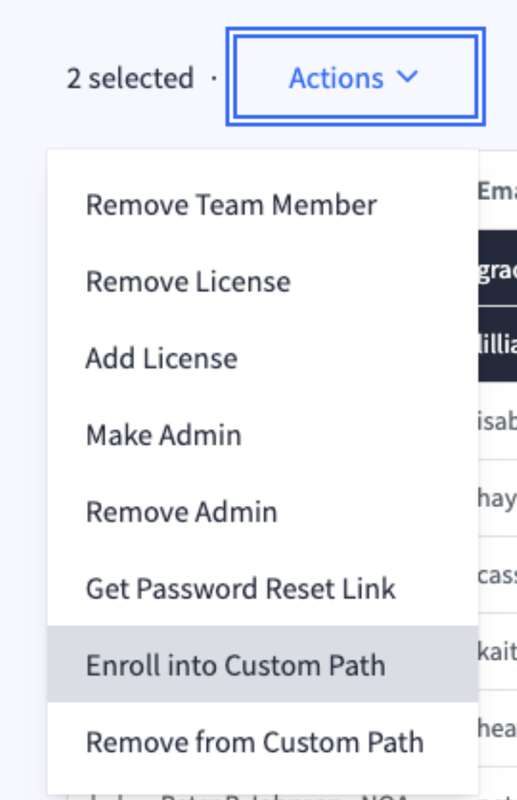

Data Academy
We ran a Data Academy for NOAA Fisheries in 2025, where a cohort of learners used dataquest to learn the basics of R and data science.
POP
- Purpose: entry-level data science training, and establish a program NMFS can repeat
- Outcomes: upskilled staff, supervisors see value in these skills and staff time
- Process: Openscapes designs & manages a program in year 1, scale up in year 2-3
Overview and basic structure
We ran a 15 week session, where learners had access to the full dataquest platform. We decided on a curriculum, which they followed through a weekly cadence of lessons. We had weekly “Help Desk” sessions on Wednesdays, and set up a Google Space for chat and Q&A. Each Monday morning we sent an email with the tasks and information needed for the week.
Expected time commitment: Weekly for 3 months: 2-hour chunks of learning time, plus optional 1 hour of support from a “help desk” and coworking.
Planning
We recorded our planning steps and meeting notes in our planning doc. We modeled the cohort after a similar initiative at the Bureau of Labour Statistics, and we got lots of good advice from them.
Participant Selection & Cohort Administration
We asked NMFS Mentors to share the opportunities with their colleagues:
Hello Mentors!
Please share with your colleagues about the upcoming NMFS Openscapes Data Academy for R programming skill-building for NOAA Fisheries. FTEs and Affiliates from any Fisheries office are welcome to sign up and there is no cost to staff or your center/office. The Data Academy is being led by Openscapes as part of the Fisheries Data Modernization Strategy.
What: You will learn R for data science through lessons on the dataquest.io platform. The Data Academy is asynchronous so you can complete the lessons on your own schedule each week, and also cohort-based so you’ll get to know your colleagues and have accountability. The Openscapes team will provide support through weekly synchronous help desk hours and coworking and a dedicated Google Space for help and collaboration with other learners. A training certificate will be issued for each course completed. During the Data Academy, you will have access to the full dataquest.io library of courses in addition to the R Curriculum.
Curriculum: https://nmfs-openscapes.github.io/data-academy.html#curriculum
Expected time commitment: Weekly for 3 months: 2-hour chunks of learning time, plus 1 hour of optional support from a “help desk” and coworking.
When: April 14 - June 17, 2025.
- Mondays: Week’s lesson reminder received via email. Complete lessons on your own schedule.
- Wednesdays: Help desk and coworking with the Openscapes team alongside other participants (Optional, via Zoom)
Who: FTEs and Affiliates from any Fisheries office, are welcome to sign up. The 40 available spots will be distributed across centers and offices.
What’s the minimum I need to know? Absolute beginners are encouraged to apply. People should be comfortable working with data in other contexts (e.g., spreadsheets, databases, GIS, other languages such as Python, Matlab, etc.).
Cost: Free. There is no cost to staff or your center/office. This opportunity is supported by NOAA funding to Openscapes.
How to apply: If you’re interested in participating, please add yourself to the interest sheet: DataAcademy_Interest_Spring2025 [ nmfs-openscapes ]. Deadline to apply is close of business, March 24. Selected applicants will be notified April 1. The 40 available spots will be distributed across centers and offices. Participants will be selected by the Openscapes team with input from NMFS Open Science staff and NMFS Openscapes Mentors. If people decline their offer to participate, we will select people from the waitlist, prioritizing people from the same division.
Frequently asked questions and details of the curriculum are listed on the NMFS Openscapes Data Academy page.
What is Openscapes? Since 2020, Openscapes has helped NOAA Fisheries teams and individuals make substantial progress on difficult workflow transformation goals, such as transitioning to new cloud computing or data storage workflows, improving team awareness and collaboration, and automating (scripting) large data-heavy reports. They have been recognized by the White House, NASA, NIH, California EPA, Posit, Mozilla, and others for their work supporting science teams transitioning to open science and cloud workflows. This opportunity is supported through the “Fully Enable Open Science” initiative in the Fisheries Modernization Strategy. This initiative is part of our NOAA Fisheries Data Strategy and led by the Office of Science and Technology.
Please share this opportunity with your colleagues across NOAA Fisheries! These details are also listed here: https://nmfs-openscapes.github.io/data-academy.
Cheers,
Stefanie Butland, Julie Lowndes, Andy Teucher, Openscapes
Eli Holmes, Jon Peake, NMFS Open Science & NMFS Openscapes
People who were interested in participating signed up in the interest sheet. In signing up, participants wrote their learning goals, from which we attempted to infer their experience level (1 = true beginner, 2 = uncertain, 3 = more experienced). We then asked them to return to the spreadsheet and confirm their experience level, and/or optionally remove themselves from consideration for the first cohort.
Hi All!
We’re thrilled to see your interest in increasing your R skills and that >150 people have applied to participate in our first NMFS Openscapes Data Academy! With only 40 spots available at a time, we have decided to focus Cohort 1 this spring for “true R beginners” with little or no coding experience and hold 3 additional cohorts in the next 12 months for other R learners. The Data Academy cohorts 2025 doc outlines the plan for each cohort.
Now we need your help to self-assess so we can select 40 “true beginners” for Cohort 1. Please review your Cohort assignment (inferred skill level) in DataAcademy_Interest_Spring2025 [ nmfs-openscapes ]; we currently have >40 applicants labeled as Cohort 1. Assignments were based on your responses to “briefly describe your learning goals for the data academy”, then we (Julie, Andy, Stef, Eli, Jon) assigned cohorts. Have we mis-assigned your skill level? Are you no longer able to commit to ~3 hours a week from April 14 - July 17, 2025 and need to opt out? Please indicate any changes in the spreadsheet COLUMN G and confirm you have reviewed it in COLUMN H by April 7 close of business. After that, we will distribute the 40 available spots across centers and offices and email Cohort 1 with next steps.
Folks who are not participating in a current cohort can get great support from the NMFS Open Science Help Desk & R User Group. Check out the NMFS Open Science Training page for these and other opportunities.
Thank you all for your enthusiasm for this opportunity, and working with us to provide it to as many folks as possible. We will check in with dates of Cohorts 2-4 as we get closer to them, so you don’t need to commit yet.
Cheers,
Stefanie Butland, Andy Teucher, Julie Lowndes, Openscapes
Eli Holmes, Jon Peake, NMFS Open Science
The initial plan was to run one cohort of 40 people, but decided to run the equivalent of two cohorts simultaneously, for a total for 80 people.
We selected all applicants who confirmed their experience as level-1, and chose level-2 applicants if they had confirmed their level, and if their learning goals included clear planned use - enough to complete a cohort of 80 people.
People who were selected were added to a data-academy Google Group in Openscapes Google Workspace. This Google Group was used for sending mass emails to particpants.
Particpants were also added to a NOAA Google Chat Space, for asynchronous help and cooperative learning.
Pre-cohort Engagement
Applicants who were selected were sent this email:
Hello All,
We are excited to welcome you to the 2025 NMFS Openscapes Data Academy – our first lessons begin next week on Monday April 14! Our first cohort for R beginners will be supported with weekly emails, synchronous help desk support from the Openscapes team, and help in a dedicated Google Space. Many thanks to NMFS Openscapes Mentors and NMFS Open Science Team, who have helped shape and amplify this opportunity.
We are doubling our level-1 R beginners cohort size to 80 people to meet the demand from over 150 signups. Thank you for helping self-assess your skill level; we selected all 70 level-1 folks plus 10 level-2 people, with level-2 folks selected to achieve representation across centers and offices.
On April 9-10 you will be added to the dataquest.io platform with your NOAA email. Then, we will follow a weekly cadence, April 14 - July 17 (we will share Google Calendar invites via a Google Group, so you will see a few emails as we set that all up):
- Mondays: Week’s lesson reminder received via email. Complete the lesson on your own schedule.
- Wednesdays: Help desk and coworking with the Openscapes team and data academy colleagues (Optional, via Zoom). Hours will alternate between 1-2pm PT (starting April 16th), and 12-1pm PT (starting April 23).
Action items.
- If you can no longer actively participate, please reply immediately to this email so we can give your spot to another R beginner. DataAcademy_Interest_Spring2025 [ nmfs-openscapes ] lists who else will be participating alongside you.
- Check that you’ve received Google Calendar invites for our weekly help desk sessions. If you have not received these invites, please let us know. We will meet remotely via Zoom, which you can do from the browser without installing any software.
Additional Information.
All Openscapes events abide by our Code of Conduct. We are dedicated to providing a positive learning environment for all. Please let us know if you require any accommodations or if there is anything we can do to make this cohort more accessible to you.
Please let us know if you have any questions. Thank you for being a part of this; we’re looking forward to continuing skillbuilding and strengthening relationships and open science across NMFS.
Cheers,
Stefanie Butland, Andy Teucher, Ileana Fenwick, Julie Lowndes (Openscapes)
Eli Holmes, Jon Peake (NMFS Open Science)
Applicants who were not selected were sent this email:
Hi All!
Thank you for applying to participate in our first year of NMFS Openscapes Data Academy. To meet the demand we doubled our level 1 R beginners cohort to 80 people and they have been enrolled. From over 150 applicants, we selected everyone who self-assessed as level 1 (70 people), plus 10 people from level 2 selected to achieve representation across centers and offices.
You are one of the 79 people who signed up but are not in that first cohort. We will support you too: we plan to hold additional cohorts in the next 12 months for R and python learners to learn self-paced through access to the full suite of courses available on the Dataquest platform. You do not need to do anything further to be included. In July, we will get in touch again with a more detailed plan.
In the meantime, anyone can get great support from the NMFS Open Science Help Desk and R User Group. Check out the NMFS Open Science Training page for these and other opportunities.
Thank you all for your enthusiasm for this opportunity. Please don’t hesitate to reach out to any of us and keep an eye on other Openscapes events that you are welcome to join.
Cheers, Stefanie Butland, Andy Teucher, Julie Lowndes, Openscapes Eli Holmes, Jon Peake, NMFS Open Science
dataquest.io Setup and Administration
General
- Licences are $283 / year
- The dataquest Teams FAQ is helpful.
- Email
teams@dataquest.iowith anything; they’ll get back to us in 24 hours - Chandra AI is pretty good for in-lesson help (in lower left as working through courses)
- There is a voice screenreader in the courses, some learners found it very helpful.
- API to download metrics on learners’ progress for reporting. Scripts and instructions are kept in the nmfs-openscapes/data-academy repo
Steps
- Set up account at dataquest.io Teams
- We didn’t start with a pilot so that was unusual and caused some hiccups getting access to the account. A few emails and a Zoom meeting got things sorted.
- Julie is the account owner, Andy and Ileana were admins
- They created a custom learning path for us, which consisted of two existing Skills Paths: R Basics for Data Analysis + Data Visualization with R
- Created custom banner and certificate template
- Created bulk upload csv files at: - DataQuest-bulk-upload
- Added learners via csv upload, once all in, emailed
teams@dataquest.ioto get licenses added, we were sent the invoice. They turned off auto-renewal. - Learners and helpers were given licenses so we could do the lessons
Adding and removing people
- Additions and removals annotated manually in the signup sheet DataAcademy_Interest_Spring2025 [ nmfs-openscapes ]
- Dataquest initially enrolled the cohort in the custom learning path, but people added after that needed to be added manually:
 - Google Group (Openscapes) is not linked to Google Space (NMFS) - Andy thought he was also adding to the latter when he added to the former
Curriculum
Dataquest offers many different “Learning Paths”, including Career Paths and Skill Paths. These Paths are composed of one or more courses, each of which consist of several lessons.
Participants complete two Skill Paths (view as weekly spreadsheet):
R Basics for Data Analysis (4 courses)
- Introduction to Data Analysis in R (weeks 1-3)
- Data Structures in R (weeks 3-7)
- Control Flow, Iteration, and Functions in R (weeks 8-9)
- BREAK WEEK
- Specialized Data Processing in R (weeks 11-12)
Data Visualization with R (1 course)
- Introduction to Data Visualization in R (weeks 13-15)
Participants have access to the full dataquest.io library of courses in addition to the R Curriculum. We recommended the following additional courses for those who had extra capacity:
Cohort Engagement
Weekly Emails
Each Monday morning we sent an email with:
- the week’s lessons
- the topics we would be covering in that week’s demo
- any action items they needed to take
- a reminder of the asynchronous (Google Space) and synchronous (Help Desk) support opportunties
To: All 80 participants
From: Andy
Cc: Ileana, Julie, Stef, (Eli & Jon yes on week 1 but not afterwards)
Subject: Week 1 – NMFS Openscapes Data Academy!
Hello!
We are excited to get started on the 2025 NMFS Openscapes Data Academy – our first lessons begin this week!
This week (April 14-18)
- Curriculum goals: Lesson 1 and 2 of Introduction to Data Analysis in R
- Lesson 1: Introduction to Programming in R
- Lesson 2: Arithmetic Expressions and Variables in R
- Lesson 1: Introduction to Programming in R
- Help Desk :
- Wednesday April 16, 1-2pm PT. https://zoom.us/j/91025564590
Action items:
Check that you’ve received an invitation to the dataquest.io platform. If you have not received these invites, please reply to Andy. On April 11 you were added to dataquest.io with your NOAA email. Also please verify in your account profile that your name is displayed as you would like it - this will be used when you earn certificates for completing courses.
Check that you’ve received Google Calendar invites for our (optional) weekly Wednesday help desk sessions. If you have not received these invites, please reply to Andy. Come with questions or to complete your lessons on your own, but with company through coworking! We will meet remotely via Zoom, which you can do from the browser without installing any software.
Install R and RStudio on your computer by week 3. We know that each center has a different process for software installation so please try to action this as soon as you are able.
You will be supported by Openscapes team members Andy Teucher and Ileana Fenwick. Between us we have more than 20 years of experience as R users and developers, in marine science, ecology and conservation, and supporting open science in government, academia, and industry.
Cohort background information. We will follow a weekly cadence, April 14 - July 11. We encourage everyone to be active in the Cohort as you are able to; peer-learning and peer-teaching is an incredibly effective way to understand and solidify what you’re learning in the DataQuest platform
- Mondays: Week’s lesson reminder received via email. Complete the lesson(s) on your own schedule.
- Wednesdays: Help desk and coworking with the Openscapes team and data academy colleagues (Optional, via Zoom). Hours will alternate between 1-2pm PT (starting April 16th), and 12-1pm PT (starting April 23).
- Asynchronous: Asking questions and learning from each other in the Google Space.
Over the course of the next 13 weeks we will be completing two “Skills Paths” in the DataQuest platform:
Please let us know if you have any questions. We are dedicated to providing a positive learning environment for all. Please let us know if there is anything we can do to help you throughout the cohort, as we want to make this opportunity most effective for you. Thank you for being a part of this; we’re looking forward to continuing skillbuilding and workforce development across NOAA Fisheries with you.
Cheers,
Andy Teucher, Ileana Fenwick, Julie Lowndes, Stefanie Butland (Openscapes)
Eli Holmes, Jon Peake (NMFS Open Science)
To: All 80 participants
From: Andy
Cc: Ileana, Julie, Stef
Subject: Week 2 – NMFS Openscapes Data Academy!
Hello, and welcome to Week 2 of the 2025 NMFS Openscapes Data Academy!
This week (April 21-25)
- Curriculum goals: Lesson 3 and 4 of Introduction to Data Analysis in R
- Lesson 3: Logical Expressions in R
- Lesson 4: Data Manipulation with R: Basics
- Lesson 3: Logical Expressions in R
- Help Desk :
- Wednesday April 23, 12-1pm PT. https://zoom.us/j/91025564590
- Ongoing asynchronous discussion in our Google Space
We had a fun and productive Help Desk session last week, with a small but very engaged group of learners. You can see our collaborative notes document here - we will add to this each week when we meet.
Action items:
- Install R and RStudio on your computer by week 3 (next week). We know that each center has a different process for software installation so please try to action this as soon as you are able. There was a short discussion about it in our Google Space last week.
- Please try to follow the learning schedule we are suggesting as much as possible. Learning in a cohort will be more enjoyable and productive than going it alone, and it will get harder to catch up as time goes on and the lessons get more complex. That said, we understand that everyone is dealing with a lot right now, so please let us know if there is anything we can do to help make your learning journey more manageable.
Update: Dataquest have created a custom Learning Path for us, consisting of R Basics for Data Analysis, and Data Visualization with R. You don’t need to action anything here; you have been automatically enrolled. It is the same curriculum we have been following, and your completed lessons will apply to all applicable paths, including this new one.
Have a great week, and we’d love to see you in the Help Desk session on Wednesday if you would like to join us!
Cheers,
Andy Teucher, Ileana Fenwick, Julie Lowndes, Stefanie Butland
To: All 80 participants
From: Andy
Cc: Ileana, Julie, Stef
Subject: Week 3 – NMFS Openscapes Data Academy!
Hello, and welcome to Week 3 of the 2025 NMFS Openscapes Data Academy!
This week (April 21-25)
- Curriculum goals: Last lesson of Introduction to Data Analysis in R, and first lesson of Data Structures in R:
- Lesson 5 of Introduction to Data Analysis in R: Project: Install RStudio
- Lesson 1 of Data Structures in R: Vectors in R
- Lesson 5 of Introduction to Data Analysis in R: Project: Install RStudio
- Help Desk :
- Wednesday April 30, 1-2pm PT. https://zoom.us/j/91025564590
- Ongoing asynchronous discussion in our Google Space
Help Desk sessions remain small so far, so lots of space to chat and ask questions if you want to join us! I anticipate that as lessons get more complex the sessions will get busier! You can see our collaborative notes document here - we will add to this each week when we meet. Also remember that our Google Space is a great place to ask (and help answer) questions between Help Desk sessions!
Have a great week, and we’d love to see you in the Help Desk session on Wednesday if you would like to join us!
Cheers,
Andy Teucher, Ileana Fenwick, Julie Lowndes, Stefanie Butland
To: All 80 participants
From: Andy
Cc: Ileana, Julie, Stef
Subject: Week 4 – NMFS Openscapes Data Academy!
Hello, and welcome to Week 4 of the 2025 NMFS Openscapes Data Academy!
This week (May 5-9)
- Curriculum goals: Just one lesson this week:
- Lesson 2 of Data Structures in R: Matrics
- Lesson 2 of Data Structures in R: Matrics
- Help Desk :
- Wednesday May 7, 12-1pm PT. https://zoom.us/j/91025564590
- Our shared notes document
- Ongoing asynchronous discussion in our Google Space
For those who want to know what’s ahead, here is our full weekly plan for working through the Intro to R and Data Visualization with R learning path in dataquest. If you are having trouble keeping up, feel free to reach out directly to me or Ileana and we would love to help you.
Have a great week, and we’d love to see you in the Help Desk session on Wednesday if you would like to join us!
Cheers,
Andy Teucher, Ileana Fenwick, Julie Lowndes, Stefanie Butland
To: All 80 participants
From: Andy
Cc: Ileana, Julie, Stef
Subject: Week 5 – NMFS Openscapes Data Academy!
Hello, and welcome to Week 5 of the 2025 NMFS Openscapes Data Academy!
This week (May 12-16)
- Curriculum goals: Just one lesson this week:
- Lesson 2 of Data Structures in R: Lists
- Lesson 2 of Data Structures in R: Lists
- Help Desk :
- Wednesday May 14, 1-2pm PT. https://zoom.us/j/91025564590
- Our shared notes document
- Ongoing asynchronous discussion in our Google Space
We are going to try something new in the Help Desk sessions going forward: Starting this week Ileana or I will walk through one or two of the sections in the lesson(s) from the week - this week it is “Lists”. Lists in R are a bit of a strange animal if you haven’t encountered them before, so we will talk through some of the trickier bits of the lesson.
Have a great week, and we’d love to see you in the Help Desk session on Wednesday if you would like to join us!
Cheers,
Andy Teucher, Ileana Fenwick, Julie Lowndes, Stefanie Butland
To: All 80 participants
From: Andy
Cc: Ileana, Julie, Stef
Subject: Week 6 – NMFS Openscapes Data Academy!
Hello, and welcome to Week 6 of the 2025 NMFS Openscapes Data Academy! Apologies for the late email this week.
This week (May 19-23)
- Curriculum goals: Just one lesson again this week:
- Lesson 4 of Data Structures in R: Dataframes
- Lesson 4 of Data Structures in R: Dataframes
- Help Desk :
- Wednesday May 20, 12-1pm PT. https://zoom.us/j/91025564590
- Our shared notes document
- Ongoing asynchronous discussion in our Google Space
Last week Ileana and I walked through some of the trickier parts of the “Lists” lessons, and there was lots of good discussion! This week we will do the same for Data Frames. Data Frames are a fundamental structure in data analysis, and I hope this week you will start to see how they will apply to your work in a more tangible way.
Have a great week, and we’d love to see you in the Help Desk session on Wednesday if you would like to join us!
Cheers,
Andy Teucher, Ileana Fenwick, Julie Lowndes, Stefanie Butland
To: All 80 participants
From: Andy
Cc: Ileana, Cassie, Julie, Stef
Subject: Week 7 – NMFS Openscapes Data Academy!
Hello, and welcome to Week 7 of the 2025 NMFS Openscapes Data Academy!
This week (May 26-30)
- Curriculum goals: One lesson this week, but it’s a bigger one:
- Help Desk :
- Wednesday May 28, 1-2pm PT. https://zoom.us/j/91025564590
- Our shared notes document
- Ongoing asynchronous discussion in our Google Space
The guided project in this week’s lesson brings together a lot of the concepts you’ve learned in the preceding weeks. It may take you a bit more time as you actively practice and build on the skills we have learned so far, and that’s okay. There are many ways to get help if you need it! You can post in the Google Space so everyone can benefit from the conversation, and please do come to the Help Desk on Wednesday if you can. People have had good luck with the Chandra AI assistant in the dataquest platform, and dataquest links to their version of the solution in the last page of the lesson. I have also put my version on GitHub.
Have a great week, and we’d love to see you in the Help Desk session on Wednesday if you would like to join us! This week and in the future, we’ll be joined in our Help Desk sessions by the amazing Cassie Nickles, so we will have lots of support to help answer your questions and dig into any issues.
Cheers,
Andy Teucher, Ileana Fenwick, Cassie Nickles, Julie Lowndes, Stefanie Butland
PS:
We had originally planned to have two lessons this week, but since the guided project is a fairly heavy task and it’s a short week due to the holiday, we have decided to push the first lesson of Control Flow, Iterations, and Functions to next week. We’ve updated the curriculum schedule accordingly.
To: All 80 participants
From: Andy
Cc: Ileana, Cassie, Julie, Stef
Subject: Week 8 – NMFS Openscapes Data Academy!
Hello, and welcome to Week 8 of the 2025 NMFS Openscapes Data Academy!
This week (June 2-6)
- Curriculum goals: Lessons 1 and 2 of Contol Flow, Iteration, and Functions (4 hrs):
- Lesson 1: Control Flow in R
- Lesson 2: Iterations in R
- Lesson 1: Control Flow in R
- Help Desk :
- Wednesday May 28, 1-2pm PT. https://zoom.us/j/91025564590
- Our shared notes document.
- We will have space for questions and discussion, breakout rooms for quiet work or specific help, and we’ll walk through some of the thornier bits of this week’s lessons.
- Ongoing asynchronous discussion in our Google Space
Have a great week, and we’d love to see you in the Help Desk session on Wednesday if you would like to join us!
Cheers,
Andy Teucher, Ileana Fenwick, Cassie Nickles, Julie Lowndes, Stefanie Butland
To: All 80 participants
From: Andy
Cc: Ileana, Cassie, Julie, Stef
Subject: Week 9 – NMFS Openscapes Data Academy!
Hello, and welcome to Week 9 of the 2025 NMFS Openscapes Data Academy!
This week (June 9 - 13)
- Curriculum goals: Lessons 3 and 4 of Contol Flow, Iteration, and Functions (4 hrs):
- Lesson 1: Functions in R
- Lesson 2: Guided Project: Creating An Efficient Data Analysis Workflow
- Lesson 1: Functions in R
- Help Desk :
- Wednesday June 11, 1-2pm PT. https://zoom.us/j/91025564590
- Our shared notes document.
- We will have space for questions and discussion, breakout rooms for quiet work or specific help, and we’ll walk through some of the thornier bits of this week’s lessons.
- Ongoing asynchronous discussion in our Google Space
Have a great week, and we’d love to see you in the Help Desk session on Wednesday if you would like to join us! We’ll try to spend some time going over functions, as well as the guided project.
Cheers,
Andy Teucher, Ileana Fenwick, Cassie Nickles, Julie Lowndes, Stefanie Butland
To: All 80 participants
From: Andy
Cc: Ileana, Cassie, Julie, Stef
Subject: Week 10 – NMFS Openscapes Data Academy! Break Week!
Hello, and welcome to Week 10 of the 2025 NMFS Openscapes Data Academy!
This week (June 16-20)
- We’re taking a break this week! We recognize that keeping up this pace of lessons is a lot, and so we’ve decided to add in a week with no new lessons. Please take a breather, take some time to catch up if you need, and/or review things from previous weeks. We’ve updated the curriculum accordingly, and will extend the schedule by one additional week (wrapping up the scheduled lessons the week of July 21).
- Help Desk :
- Wednesday June 18, 12-1pm PT. https://zoom.us/j/91025564590
- Our shared notes document.
- We will be available for questions and discussions, make breakout rooms for quiet work or specific help, and give you any other support you need.
- Ongoing asynchronous discussion in our Google Space
Have a great week, and we’d love to see you in the Help Desk session on Wednesday if you would like to join us!
Cheers,
Andy Teucher, Ileana Fenwick, Cassie Nickles, Julie Lowndes, Stefanie Butland
To: All 80 participants
From: Andy
Cc: Ileana, Cassie, Julie, Stef
Subject: Week 11 – NMFS Openscapes Data Academy!
Hello, and welcome to Week 11 of the 2025 NMFS Openscapes Data Academy! We hope the break from new lessons last week was helpful, and look forward to working on this week’s lessons with you! This week we are looking at manipulation of character strings, and working with dates and times in R - both critical components of data analysis!
This week (June 23-27)
- Curriculum goals: Lessons 1 and 2 of Specialized Data Processing:
- Lesson 1: String Manipulation in R: Fundamentals
- Lesson 2: Date and Time Manipulation in R: Fundamentals
- Lesson 1: String Manipulation in R: Fundamentals
- Help Desk :
- Wednesday June 25, 1-2pm PT. https://zoom.us/j/91025564590
- Our shared notes document.
- We will have space for questions and discussion, breakout rooms for quiet work or specific help, and we’ll walk through some of the trickier bits of this week’s lessons.
- Ongoing asynchronous discussion in our Google Space
Have a great week, and we’d love to see you in the Help Desk session on Wednesday if you would like to join us!
Cheers,
Andy Teucher, Ileana Fenwick, Cassie Nickles, Julie Lowndes, Stefanie Butland
To: All 80 participants
From: Andy
Cc: Ileana, Cassie, Julie, Stef
Subject: Week 12 – NMFS Openscapes Data Academy!
Hello, and welcome to Week 12 of the 2025 NMFS Openscapes Data Academy!
This week we are looking at a new way of iterating in R, using the map() function. This is more common in R than using loops, but understanding one will help you understand the other. We also continue to build on the guided project from Week 9, putting into practice some practical skills like working with missing data, and getting more practice using dplyr functions to manipulate and summarize data.
This week (June 30 - July 4)
- Curriculum goals: Lessons 3 and 4 of Specialized Data Processing:
- Help Desk :
- Wednesday July 2, 12-1pm PT. https://zoom.us/j/91025564590
- Our shared notes document.
- We will have space for questions and discussion, breakout rooms for quiet work or specific help, and we’ll walk through some of the trickier bits of this week’s lessons.
- Ongoing asynchronous discussion in our Google Space
Have a great week, and we’d love to see you in the Help Desk session on Wednesday if you would like to join us!
Cheers,
Andy Teucher, Ileana Fenwick, Cassie Nickles, Julie Lowndes, Stefanie Butland
To: All 80 participants
From: Andy
Cc: Ileana, Cassie, Julie, Stef
Subject: Data Academy - dataquest.io certificates!
Hi everyone!
You’ve all been doing awesome work and making progress working through the Data Academy curriculum at your own pace! Whether you’ve completed one course or five, you’ve gained valuable skills along the way. With just 4 weeks remaining in our program, now’s the perfect time to push toward earning your next certificate!
Here’s what’s available to you:
Individual Course Certificates - Complete any of the courses in the curriculum to earn a certificate for that specific course.
Path Certificates - Finish an entire learning path (R Basics for Data Analysis OR Data Visualization with R) to earn a comprehensive path certificate that showcases your complete skill set in that area. Complete both of these paths and you will have completed our custom “Introduction to R and Data Visualization” path.
How to claim your certificates: Once you complete a course or path, Dataquest automatically generates your certificate. You can see what certificates you have earned by clicking on your profile in the top right, and then click “Profile” - you can download them all at the bottom of the page!
Your access continues until August 18th. Whether you’re close to finishing a course or ready to complete an entire path, every certificate you earn represents real progress in your data journey.
Need help getting to the finish line? Join us at the Wednesday Help Desk - we’re here to help you navigate any challenges and make sure you get the certificates you’re working toward.
You’ve already invested so much time and effort, and the certificates are a nice way to show it!
Cheers,
Andy Teucher, Ileana Fenwick, Cassie Nickles, Julie Lowndes, Stefanie Butland
Google Space
We created a Google Space in the NMFS organization, and used it for asynchronous chat and help. We posted reminders about the Help Desk sessions and other announcements, and links to Help Desk notes and recording after the sessions. Participants used it to ask and answer questions.
Hi everyone, welcome to the NMFS Data Academy for R!
We hope you’ll use this space to ask and answer questions, and chat about what we’re learning - for example, where it might be applicable to your work, what it’s inspired you to think about, or even question when and how it might be relevant. Ileana Fenwick and I are also here to answer your questions, and to listen to your feedback about how it is going. I’m really looking forward to working with all of you!
Next time we should give more tips about using markdown code formatting in the Google Space:
To format code in chat here, you can use special code formatting: For inline code, surround the code with single backticks (eg., `character`). For code blocks, you surround it with "fences" of three backticks, or in the formatting toolbar click the "code block" button to insert a code block.
```
library(tidyverse)
read_csv("file.csv")
```
(This is markdown formatting that is commonly used to write code in forums like this, here is GitHub's instructions.Help Desk
We ran a weekly 1-hour help desk session on Wednesdays, alternating 12-1 pm and 1-2 pm PT. These time slots were chose to accomadate time zones from Alasaka to Eastern. We received comments that Wedndesdays weren’t ideal as it was often too early in the week and people were not able to progress far enough to have questions ready.
Stefanie ran the logistics of the Help Desk sessions, and there were usually at least two, often three, helpers attending (Andy and/or Cassie and/or Ileana).
Help Desks began as informal, unstructured Q&A sessions, but evolved over the weeks. To try to make them more engaging, and entice people to come, we started choosing one or two lessons from the week and did a screen-sharing walkthrough in the main room. We had one breakout room for independent quiet work, one for active Q&A with a helper, and sometimes one breakout room with a second demo/walkthrough by a helper.
Attendees signed in to the roll call, and added any specific questions/topics they wanted to discuss. We added a “silent journaling” section at the beginning, where people would write in the doc:
- Something you feel good about learning
- A place where you are feeling stuck
Attendees voted and/or discussed (depending on numbers) as to what the main room demo topic would be.
In general, we had between 3 and 10 attendees, with about 4-5 “regulars” who came to almost every session.
We recorded the demos in the main Zoom room, starting with Lesson 7, and shared them in a Google Drive.
Template Month DD, 2025
Edit description below for each week
This week (June 9 - 13). Curriculum goals: Lessons x and y of [Lesson]:
- Lesson 1: [Link to lesson]
- Lesson 2: [Link to lesson]
Roll Call
Name / organization / what brings you here today?
- Andy Teucher / Openscapes / here to help!
- Ileana Fenwick / Openscapes / here to help!
- Stef Butland / Openscapes / infrastructure support for the help desk
- Cassie Nickles / Openscapes / here to help!
Welcome
Announcements, etc.
Silent Journaling
Please take a moment to share:
1) Something you feel good about learning
2) A place where you are feeling stuck.
Questions & Discussion
Breakout rooms
Please add a topic to a room below. Add your name to any room you join. Add notes and links to resources. We can come together at 10 mins before the end.
Main - Switchboard & Demo
- Who’s in the room - Stef
Room 1 - Q & A
- Who’s in the room -
Room 2 - Quiet Work
- Who’s in the room -
Room 3 -
- Who’s in the room -
Room 4 -
- Who’s in the room -
Mid-Course Survey
Engagement with those falling behind
In week 5, we identified about 20 people who had not so far started the curriculum (had less than 1 hour in the platform). We wanted to help them if we could, and give them a way to gracefully give up their spot if they couldn’t continue at this time. We emailed each of them:
Hi Name,
I wanted to reach out to see how I can support you in getting started in our Intro to R and Data Visualization course through DataQuest. We are on Week 5 of our weekly learning plan and we’d like to ensure you are able to catch up and complete the course with this cohort.
I invite you to use either of the support options below or respond here and let me know how we can help you get started. Learning a new tool can be a challenge and we are here to help in any way we can!
- Help Desk :
- Wednesday May 14, 12-1pm PT. https://zoom.us/j/91025564590
- Our shared notes document
- Wednesday May 14, 12-1pm PT. https://zoom.us/j/91025564590
- Ongoing asynchronous discussion in our Google Space
If you don’t feel you have the time or capacity to complete the course at this time, please let us know as spots are limited and we will invite another participant.
Have a great week!
Cheers,
Andy Teucher, Ileana Fenwick, Julie Lowndes, Stefanie Butland
Several people opted to give up their spot. We identified people on the waiting list, and sent them an email offering them a spot:
Hi [Name],
I’m reaching out because you previously expressed interest in the NMFS-Openscapes Data Academy, but weren’t initially selected to participate.
A spot has opened up, and we are hoping you might still be interested in participating. We are on Week 5 of our planned 13 week curriculum. The planned curriculum is intended to take us up to the week of July 14, but you will have access to the platform until August 14. You should have time to complete all of the material, you will just be on a different schedule from the rest of the group. That said, Ileana and I will be here to support you, so don’t feel as if you will be on your own!
Please have a look at the course website and let me know as soon as you can if you would like to join us.
Thanks so much,
Andy Teucher, Ileana Fenwick, Julie Lowndes, Stefanie Butland
Those that removed themselves from the course had this recorded in the participants selection sheet, as were those who were subsequently added.
Tracking progess
Participants progress could be tracked through the Team Admin portal using pre-populated reports, and raw data could be accessed through the Teams API.
We used the API to generate reports and figures on progess, these scripts are in the NMFS-Openscapes Data Academy repo.
Lessons Learned
- Explicitly ask about people’s coding experience - this was meant to be for complete beginners, but hard to infer from their description of learning goals.
- Wednesdays not great for help desk - too early in the week when there are “due dates” at the end of the week… some learners hadn’t had enough time to work on the lessons by Wednesday.
- Help Desk walkthough recordings are useful.
- A break week was suggested by a participant, and it was a great idea! We did it in Week 10.
- This schedule ended up being a bit aggressive, and learners found it difficult to dedicate the time and energy required. This was in part due to the intensity of the schedule, and in large part due to increased stress and workload in their jobs. This was exacerbated by coinciding with field season.
DataQuest platform / content
- The platform is pretty good, easy to navigate, saves your progress.
- Chandra AI assistant is useful
- Some of the content is a bit dated:
- tidyverse - some syntax updates (e.g.,
.defaultincase_when(),show_col_typesinread_csv) - Use .Rmd instead of Quarto
- should we really be teaching rbind and cbind?
- tidyverse - some syntax updates (e.g.,
- Not enough material on actually working in RStudio, using projects, etc. Maybe would be good to insert a “Coding Strategies” talk/lesson?
- Are functions and
map()really necessary for an intro course? - Takes a bit long to get to actually working with and manipulating data with the tidyverse, quite a lot of foundational material at the beginning, which is good in the long run but not very motivating.